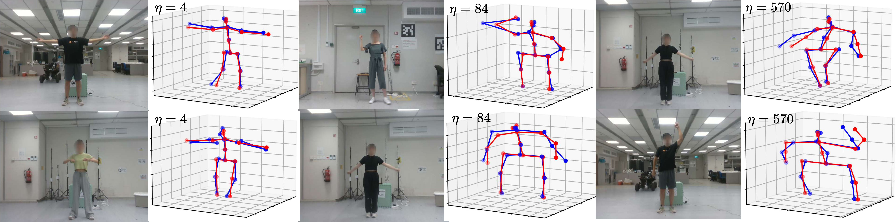
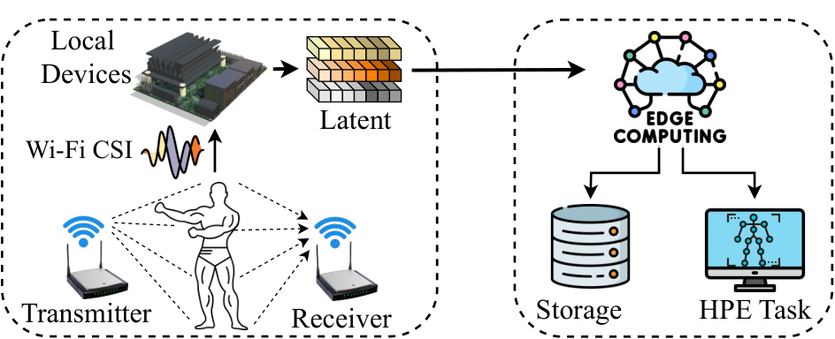
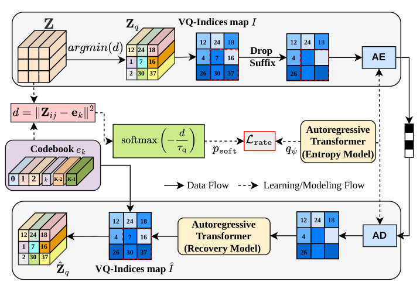
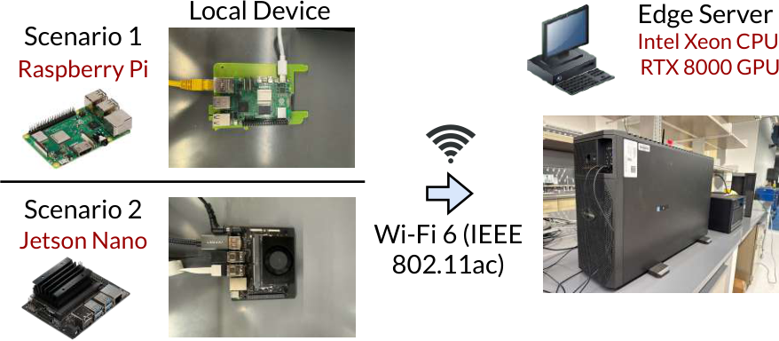

TinySense: Effective CSI Compression for Scalable and Accurate Wi-Fi Sensing
Task-aware VQGAN compression with K-means codebook resizing and Transformer-based recovery of missing indices.
Preserve the information that matters for human pose estimation.
Compress CSI at the edge. Reconstruct and sense at the server.

TinySense introduces the sensing representation.
TinySense+ extends how it is trained and transmitted.
Task-aware VQGAN compression with K-means codebook resizing and Transformer-based recovery of missing indices.
Adds a learned entropy model, rate-aware training, arithmetic coding, and adjustable prefix transmission without encoder retraining.
Wi-Fi human pose estimation uses subtle changes in channel state information to infer body motion. Continuously sending high-dimensional CSI to a server can make communication the bottleneck.
TinySense learns a discrete representation that preserves pose information. TinySense+ also optimizes how predictable those indices are, reducing coded length and allowing a device to send a shorter prefix when the communication budget changes.
Follow the pipelineA lightweight encoder at the edge.
A shared codebook and pose estimator at the server.

The encoder maps CSI to a VQ codebook. Reconstruction and keypoint supervision retain information useful for pose estimation.
TinySense + TinySense+A causal Transformer models index probabilities. Arithmetic coding and a differentiable rate objective reduce expected code length.
Added in TinySense+Send a selected prefix of the latent sequence. At the server, prefix-conditioned latent completion infers the omitted suffix.
Added in TinySense+
| Component | TinySense | TinySense+ |
|---|---|---|
| Training | Task-aware VQGAN | Adds rate regularization |
| Index coding | Fixed-length binary | Causal entropy model + arithmetic coding |
| Rate control | K-means codebook resizing | Adds adjustable prefix length |
| Recovery | Predicts erased indices | Completes the deliberately omitted suffix |
Component ablation on MM-Fi.
Values reproduced from the TinySense+ paper.
Entropy coding preserves the index sequence. Rate-aware training changes the learned representation.
Relative to the 8.00-bit baseline in this ablation, with PCK20 increasing from 41.21% to 44.01%.
| Configuration | Bits / index ↓ | Compression η ↑ | PCK20 (%) ↑ | MPJPE ↓ |
|---|---|---|---|---|
| TinySense | 8.00 | 215 | 41.21 | 170.98 |
| + entropy model | 4.82 | 356 | 41.21 | 170.98 |
| + rate-aware training | 3.21 | 535 | 44.01 | 170.17 |
| + prefix completion (75%) | 2.42 | 710 | 42.73 | 173.91 |
| + prefix completion (50%) | 1.69 | 1,015 | 40.36 | 178.42 |
The encoder stays fixed. The server completes the omitted suffix. Select one of three measured settings from the ablation.
Reported values · MM-Fi · no interpolation
η is the compression ratio relative to the paper’s raw-CSI representation. These ablation settings are distinct from the 5,840× operating point highlighted above. Evaluation uses MM-Fi and WiPose; unseen-site generalization without adaptation remains unverified.
Raspberry Pi and Jetson Nano devices.
An RTX 8000 server.

The experiments evaluate communication cost alongside pose accuracy and device computation. Entropy coding adds computation while reducing payload; the practical benefit depends on the operating point and hardware.
Read the evaluation in the paper ↗@misc{nguyen2026tinysenseplus,
title = {TinySense+: Entropy-Aware CSI Compression for
Scalable and Adaptive Wi-Fi Sensing},
author = {Nguyen, Phuc H. and Gian, Toan and Do, Cuong D.
and Chatzinotas, Symeon and Nguyen, Van-Dinh},
year = {2026},
note = {Preprint},
url = {https://www.alphaxiv.org/abs/2610.tinysense-entropy-aware-wifi-sensing}
}TinySense+ is listed as a preprint. Use the citation corresponding to the version you build on.